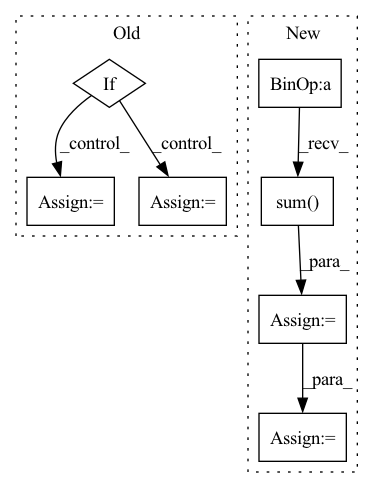

Pattern ID :1876
Before Change
assert y_anchor != None
assert x_anchor != None
if self.collection_mode:
self.collection(instance_means=x_mean, instnace_stds=x_std, y_anchors=y_anchor, x_anchors=x_anchor)
else:
assert x.shape[0] == 1 // currently, could support batch size = 1 for kernelized instance normalization
top, down, left, right = self.query_neighbors(y_anchor=y_anchor, x_anchor=x_anchor, padding=padding)
mean_matrix = self.mean_table[top:down + 1, left:right + 1, :]
std_matrix = self.std_table[top:down + 1, left:right + 1, :]
x_mean = mean_matrix.mean(dim=0).mean(dim=0).unsqueeze(0).unsqueeze(-1).unsqueeze(-1) //self.kernel * // should deal with the boundary
x_std = std_matrix.mean(dim=0).mean(dim=0).unsqueeze(0).unsqueeze(-1).unsqueeze(-1) //self.kernel *
//x_mean = x_mean.unsqueeze(-1).unsqueeze(-1)
//x_std = x_std.unsqueeze(-1).unsqueeze(-1)
After Change
top = y_anchor
down = y_anchor + 2 * padding + 1
left = x_anchor
right = x_anchor + 2 *padding + 1
x_mean = self.padded_mean_table[:,:,top:down + 1, left:right + 1] // 1, C, H, W
x_std = self.padded_std_table[:,:,top:down + 1, left:right + 1] // 1, C, H, W
assert self.kernel.shape == x.mean.shape
x_mean = x_mean * self.kernel // 1, C, H, W
x_std = x_std * self.kernel // 1, C, H, W
x_mean = x_mean.flatten(start_dim=2).sum(dim=2) // [1, C, H, W] -> [1, C, H * W] -> [1, C]
x_std = x_std.flatten(start_dim=2).sum(dim=2) // [1, C, H, W] -> [1, C, H * W] -> [1, C]
x_mean = x_mean.unsqueeze(-1).unsqueeze(-1) // [1, C] -> [1, C, 1, 1]
x_std = x_std.unsqueeze(-1).unsqueeze(-1) // [1, C] -> [1, C, 1, 1]
//top, down, left, right = self.query_neighbors(y_anchor=y_anchor, x_anchor=x_anchor, padding=padding)
//mean_matrix = self.mean_table[top:down + 1, left:right + 1, :]In pattern: SUPERPATTERN
Frequency: 3
Non-data size: 7
Instances Fragment ID: 13213385
Project Name: kaminyou/urust
Commit Name: 63159b688ad053bad7fd41015170f131d547439d
Time: 2022-01-27
Author: kaminyouho@aetherai.com
File Name: models/kin.py
M Class Name: KernelizedInstanceNorm
N Class Name: KernelizedInstanceNorm
M Method Name: forward(5)
N Method Name: forward(5)
M Parent Class: nn.Module
N Parent Class: nn.Module
M File Name: models/kin.py
N File Name: models/kin.py
M Start Line: 83
M End Line: 96
N Start Line: 89
N End Line: 115
Before Change
if self.weight is not None:
self.weight = move_to(self.weight, device)
if self.ignore_index is not None:
target = torch.argmax(target, dim=1)
loss = nn.functional.cross_entropy(pred, target, weight=self.weight, ignore_index=self.ignore_index)
else:
loss = nn.functional.cross_entropy(pred, target, weight=self.weight)
loss_dict = {"CE": loss.item()}
return loss, loss_dictAfter Change
batch_size, num_classes = pred.shape[:2]
y_hot = move_to(torch.zeros(pred.shape), device).scatter_(1, targets.unsqueeze(1) , 1.0)
y_smooth = (1 - self.alpha) * y_hot + self.alpha / num_classes
loss = torch.sum(- y_smooth * torch.nn.functional.log_softmax(pred, -1), -1).sum()
if self.reduction == "mean":
loss /= batch_size
loss_dict = {"CE": loss.item()}
return loss, loss_dict Fragment ID: 13211835
Project Name: kaylode/theseus
Commit Name: b842d768df45af67b9f7ac5349f0a65cf607ddad
Time: 2022-09-27
Author: pmkhoi@selab.hcmus.edu.vn
File Name: theseus/semantic/losses/ce_loss.py
M Class Name: CELoss
N Class Name: SemanticSmoothCELoss
M Method Name: forward(4)
N Method Name: forward(4)
M Parent Class: nn.Module
N Parent Class: nn.Module
M File Name: theseus/semantic/losses/ce_loss.py
N File Name: theseus/semantic/losses/ce_loss.py
M Start Line: 17
M End Line: 29
N Start Line: 42
N End Line: 53
Before Change
predict = F.softmax(predict, dim=1)
for i in range(target.shape[1]):
if i != self.ignore_index:
dice_loss, _ = dice(predict[:, i], {"targets": target[:, i]}, device)
if self.weight is not None:
assert self.weight.shape[0] == target.shape[1], \
"Expect weight shape [{}], get[{}]".format(target.shape[1], self.weight.shape[0])
dice_loss *= self.weights[i]
total_loss += dice_loss
loss = total_loss/target.shape[1]After Change
inputs = inputs.view(-1)
targets = targets.view(-1)
intersection = (inputs * targets).sum()
dice = (2.*intersection + self.eps)/(inputs.sum() + targets.sum() + self.eps)
loss = 1 - dice
Fragment ID: 13212415
Project Name: kaylode/theseus
Commit Name: 4e1fe493ae162a9f96ed6d7fe175133bce081fae
Time: 2022-02-19
Author: pmkhoi@selab.hcmus.edu.vn
File Name: theseus/segmentation/losses/dice_loss.py
M Class Name: DiceLoss
N Class Name: DiceLoss
M Method Name: forward(4)
N Method Name: forward(4)
M Parent Class: nn.Module
N Parent Class: nn.Module
M File Name: theseus/segmentation/losses/dice_loss.py
N File Name: theseus/segmentation/losses/dice_loss.py
M Start Line: 68
M End Line: 84
N Start Line: 12
N End Line: 23